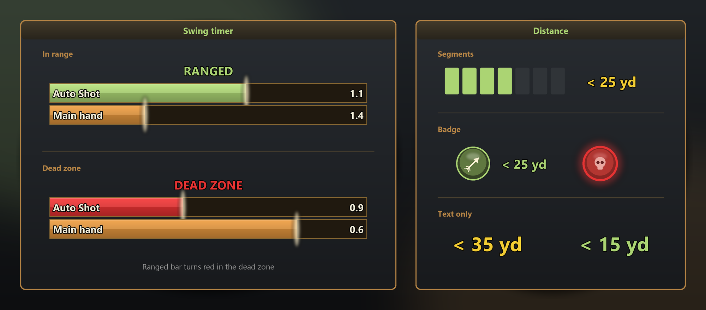
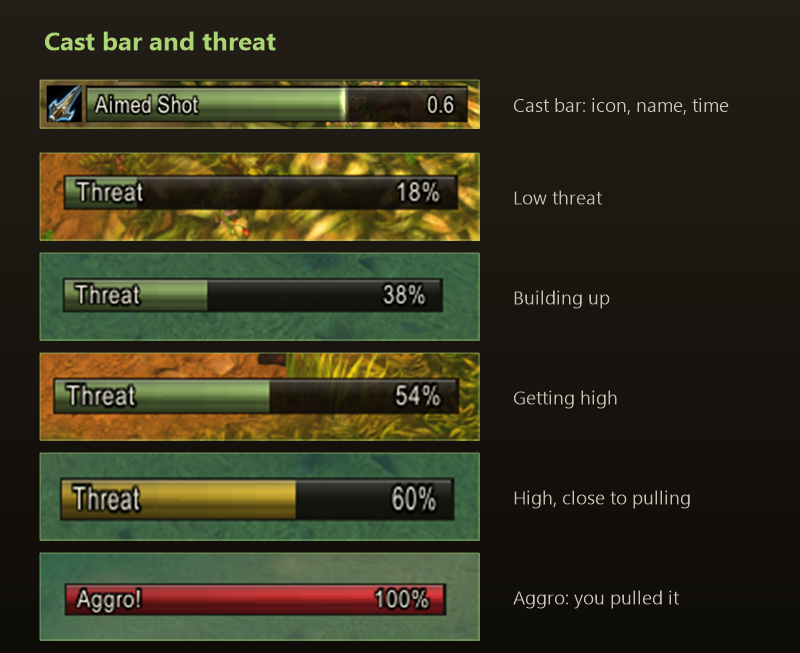
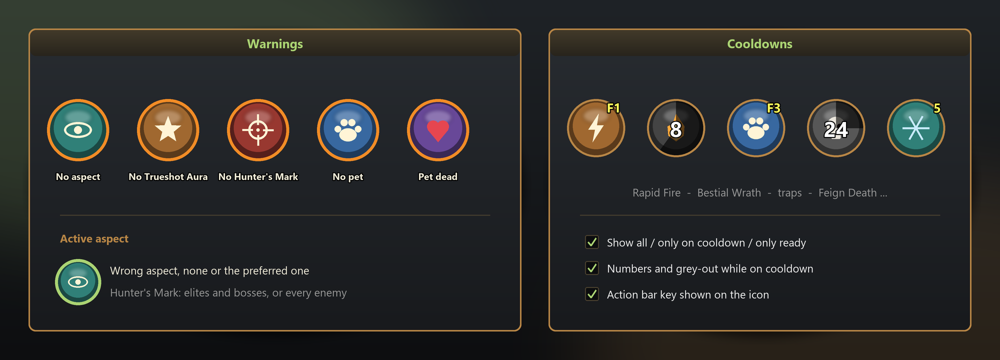
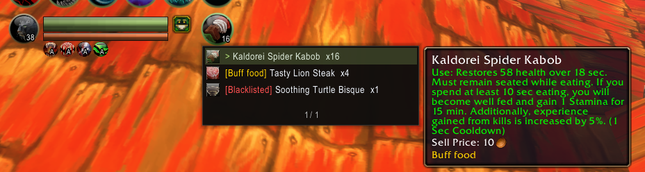
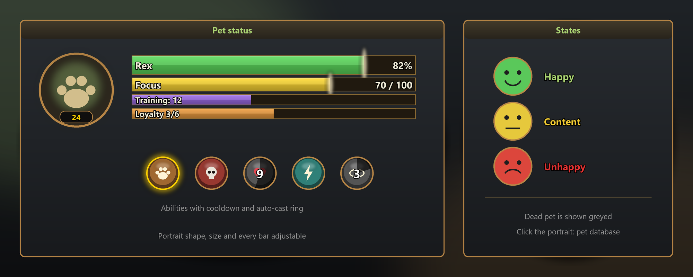
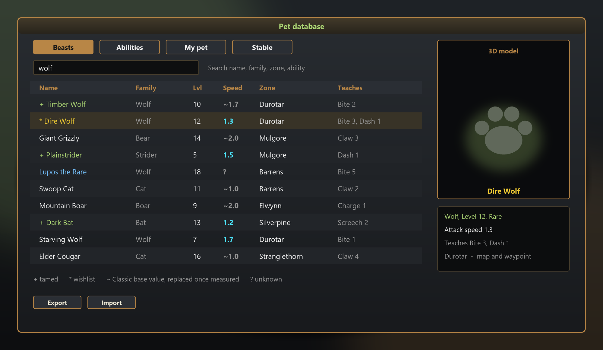
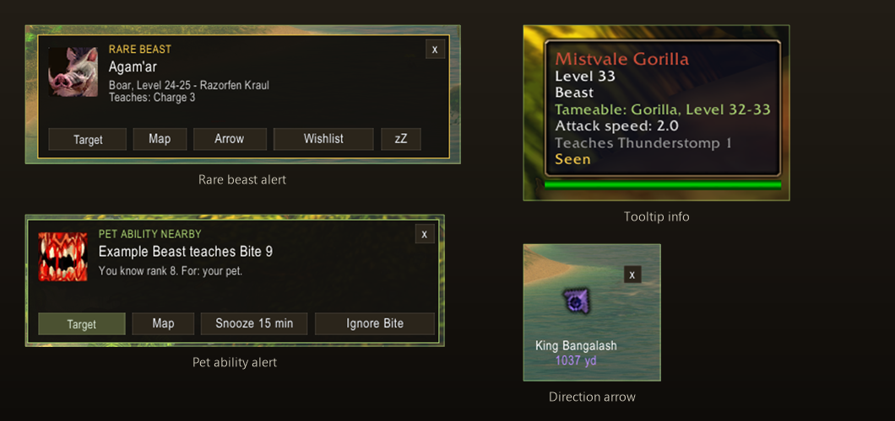
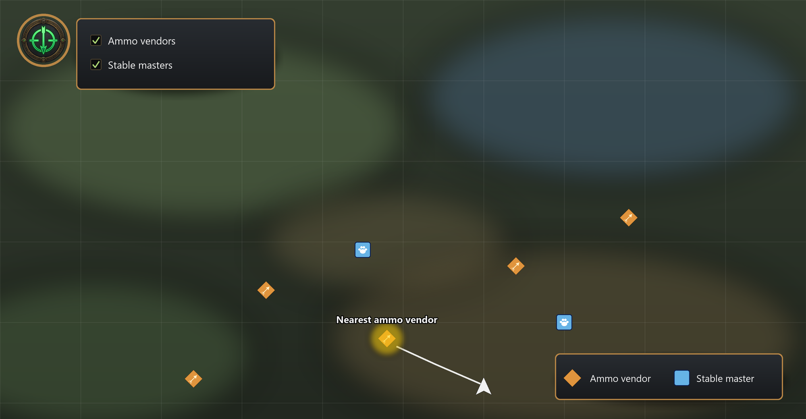
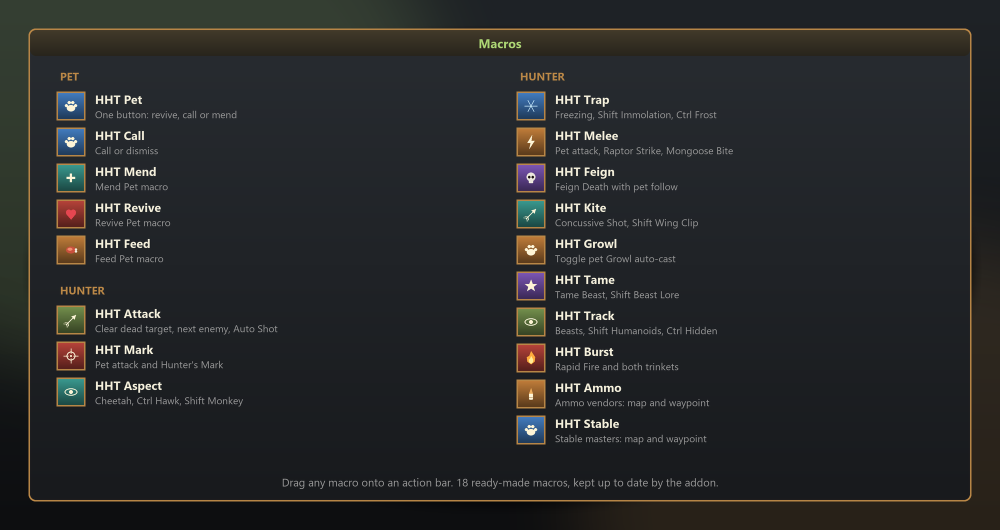
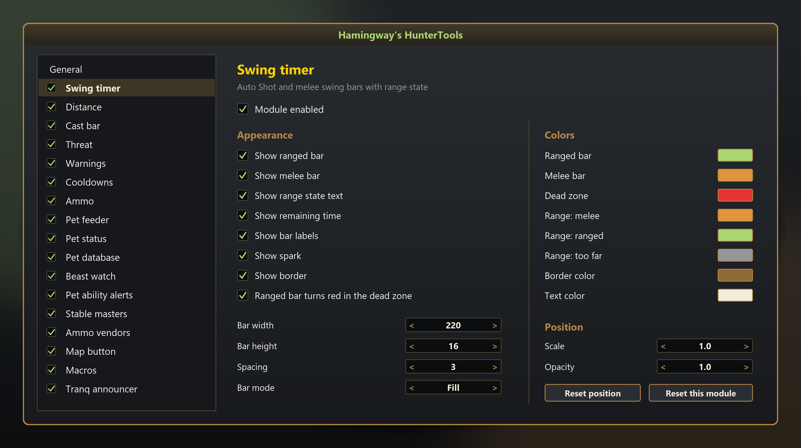

Everything at a glance
17 modules you switch on one by one. Whatever you do not need stays off.
Swing timer
Auto Shot and melee bars with range state.
Distance
Target distance in bands, melee and dead zone.
Cast bar
Player cast bar with icon, name and time.
Threat
Threat meter and aggro warning.
Warnings
Icons for missing aspect, Trueshot Aura, Hunter's Mark and pet.
Cooldowns
Cooldown icons for your hunter spells.
Ammo
Arrow and bullet counter with low ammo warning and dungeon reminder.
Pet feeder
Click to feed your pet. Per-pet food choice and blacklist.
Macros
Creates character macros for pet handling, shots, traps, aspects and more.
Tranq announcer
Announces Tranquilizing Shot in chat.
Pet status
Pet portrait, health bar and happiness.
Pet database
Pet abilities, ranks, teaching beasts and map pins.
Beast watch
Tooltip info, rare and wishlist alerts, discovery tracking and a direction arrow.
Pet ability alerts
Popup when a beast nearby teaches a higher ability rank your pet can learn.
Stable masters
Stable masters on the world map from a built-in list; learns missing ones.
Ammo vendors
Ammo vendors on the world map, waypoint to the nearest one.
Map button
A button at the top left of the world map with switches for the layers.
Combat
Everything you want to see mid-fight, in view and still tidy.

Always know when the next shot lands
- Swing timer
- Auto Shot and main hand bars with label and remaining time
- Range state text: Melee, Ranged, Dead zone, Too far, each with its own colour
- Ranged bar turns red in the dead zone
- Fill or drain mode, spark, border, background opacity
- Width, height, spacing and every colour adjustable
- Distance
- Target distance in bands: melee, dead zone, near, middle, far, max range, out of range
- Three layouts: segments, badge or text only
- Pulse and sound when entering the dead zone
- Square or round icon, size, a colour for every band

Casts in view, aggro under control
- Cast bar
- Spell icon, name, remaining time and spark
- Tells casts and channels apart
- Can hide the default cast bar
- Width, height, border and background adjustable
- Threat
- Threat bar with label and percent
- Warns at a percentage you choose, before you pull aggro
- Alert when you gain aggro, sound and blink at high threat
- Only in a group or with pet; hide when there is no threat

Never forget your aspect again
- Warnings
- No aspect active, or not your preferred aspect
- Trueshot Aura missing
- Hunter's Mark missing: elites and bosses only, or every enemy
- Pet missing or dead, with the matching spell as icon
- Show the active aspect, blink, sound, hide in combat
- Cooldowns
- Default: Rapid Fire, Bestial Wrath, Intimidation, Scatter Shot, traps, Feign Death, Deterrence and more; the list is freely editable
- All, only on cooldown or only ready; numbers, grey-out, spell names
- Action bar key shown on the icon
- Grow direction, icons per row, border and icon size

Never out of arrows, never out of food
- Ammo
- Counts bags, quiver and the ammo slot, arrows and bullets separately
- Show the ammo your weapon needs, or all of it
- Low warning below a limit: red, blink, sound
- Reminder when entering a dungeon and on ready check
- Click: choose and equip other ammo; list of all ammunition
- Show ammo vendors on the map, waypoint to the nearest
- Pet feeder
- Click feeds, right-click picks the food, Shift-click blacklists
- Food choice and blacklist per pet
- Always show, or only when the pet is not happy
- Keeps the HHT Feed macro up to date
Pets
From taming to the stable: your companion and everything about beasts in one place.

Your companion, always in view
- Portrait with level, health bar with name
- Focus, experience and training points, loyalty
- Happiness indicator: happy, content, unhappy
- Pet abilities with cooldown and auto-cast ring
- Click the portrait to open the pet database
- Round or square, size and every bar adjustable

What there is to know about every beast
- Four tabs: Beasts, Abilities, My pet, Stable
- Family, level, attack speed, zone and taught abilities per beast
- Search by name, family, zone or ability, plus filters
- Marks: tamed (+), wishlist (*), seen
- Attack speed is measured when you tame; a ~ marks the Classic base value
- 3D model preview
- Show on the map and set a waypoint
- Export and import beast data to share it

Never run past a rare beast again
- Beast watch
- Tooltip shows tameable info, family, level, speed and taught abilities
- Marks beasts as seen and, after taming, as tamed
- Popup for rare and wishlist beasts; also close to known spawns
- Buttons: target, map, arrow, wishlist, pause
- Direction arrow to the rare beast, adjustable size
- Only beasts up to your level, sound, inside dungeons, repeat delay
- Pet ability alerts
- Popup when a nearby beast teaches a higher rank your pet can learn
- For the active pet only, or every pet you have used
Map
The places that matter on the world map, one click to a waypoint.

Find vendors and stable masters instantly
- Map button at the top left with switches for the layers
- Ammo vendor layer, by ammo kind and own faction only
- Stable master layer from a built-in list; missing ones are learned when you visit them
- Waypoint to the nearest vendor or stable master
- Show beasts from the pet database on the map
- Every layer can be switched off on its own
Tools

18 ready-made macros, one drag to the bar
- 5 pet macros: one-button (revive, call or mend), call or dismiss, mend, revive, feed
- 13 hunter macros: attack, mark, aspect, trap, melee, feign, kite, growl, tame, track, burst, ammo, stable
- Shift and Ctrl pick variants, for example other aspects or traps
- Drag macros straight from the list onto your bar
- The feed macro stays in sync with the pet's food choice
- Tranq announcer: announces Tranquilizing Shot to a chat channel of your choice, with your own text and a test button

Everything toggleable, everything adjustable
- Every module has its own switch and its own page
- Own scale and opacity per module, plus global values for all
- Show always, in combat, with a target, or both
- All bar colours adjustable
- Unlock frames, move them with the mouse, lock again
- Reset positions or single modules
- Language: automatic, English or German
- Export and import all settings as one line of text
- Minimap button
Install
In three steps
- Copy the
HamingwaysHunterToolsfolder toInterface\AddOns - Start the game completely;
/reloadis not enough for new files - Type
/hhtto open the settings
Commands
/hhtopen the settings/hht unlock//hht lockunlock or lock the frames/hht resetreset the positions/hht petinfoprint the active pet's abilities